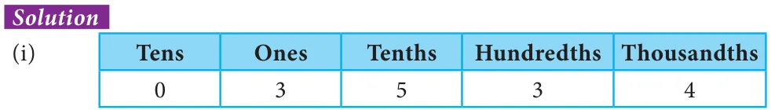
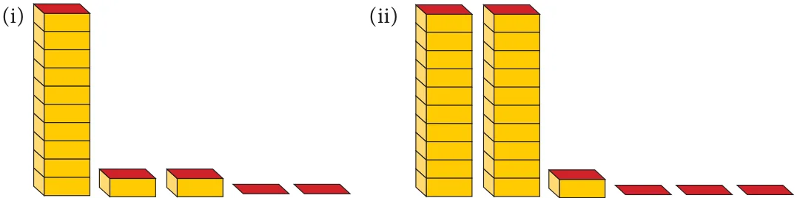

\(+ \frac{534}{101001000} + + = 3 534\).

\(+ + \frac{726}{101001000} + + = 46 726\).

- 1.Write the decimal numbers for the following pictorial representation of numbers.

- 2.Express the following in cm using decimals.
- (i)5 mm (ii) 9 mm (iii) 42 mm
(iv)8 cm 9 mm (v) 375 mm
- 3.Express the following in metres using decimals.
- (i)16 cm (ii) 7 cm (iii) 43 cm
- (iv)6 m 6 cm (v) 2 m 54 cm
- 4.Expand the following decimal numbers.
- (i)37.3 (ii) 658.37 (iii) 237.6 (iv) 5678.358
- 5.Express the following decimal numbers in place value grid and write the place value
of the underlined digit.
- (i)53.61 (ii) 263.271 (iii) 17.39 (iv) 9.657 (v) 4972.068
Objective type questions
- 6.The place value of 3 in 85.073 is _______
- (i)tenths (ii) hundredths (iii) thousands (iv) thousandths
- 7.To convert grams into kilograms, we have to divide it by
- (i)10000 (ii) 1000 (iii) 100 (iv) 10
- 8.The decimal representation of 30 kg and 43 g is ____ kg.
- (i)30.43 (ii) 30.430 (iii) 30.043 (iv) 30.0043
- 9.A cricket pitch is about 264 cm wide. It is equal to ____ m.
- (i)26.4 (ii) 2.64 (iii) 0.264 (iv) 0.0264